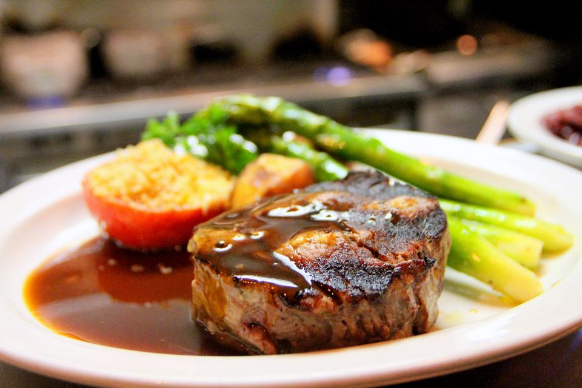
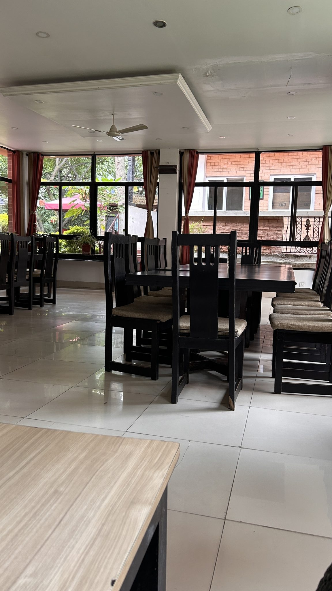
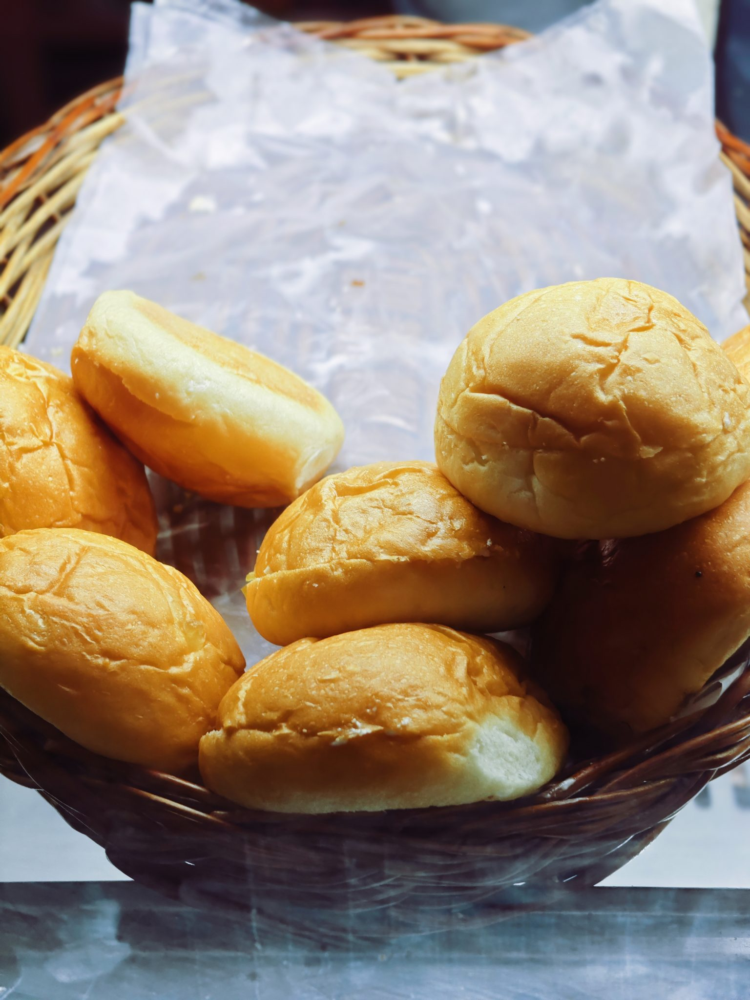
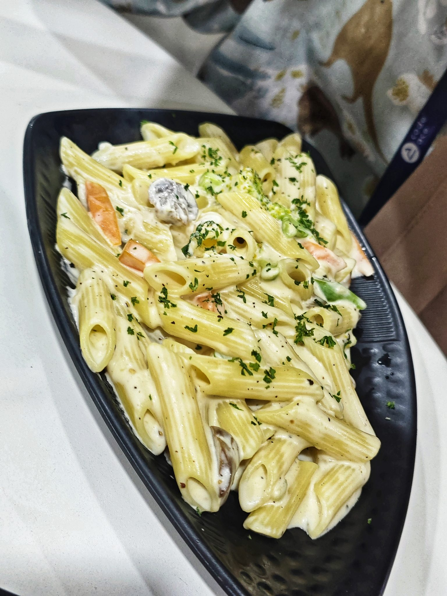
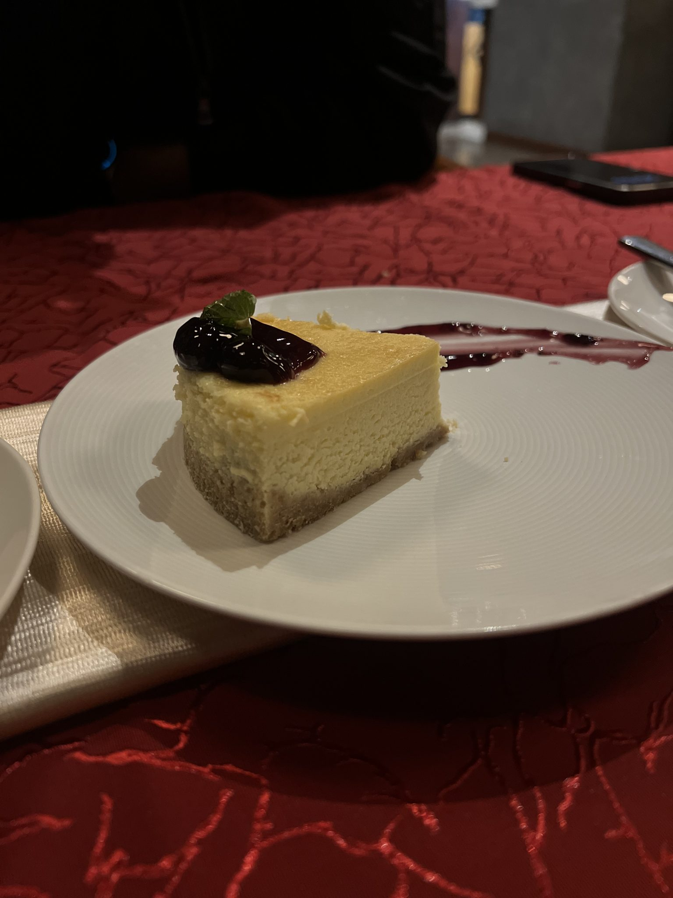
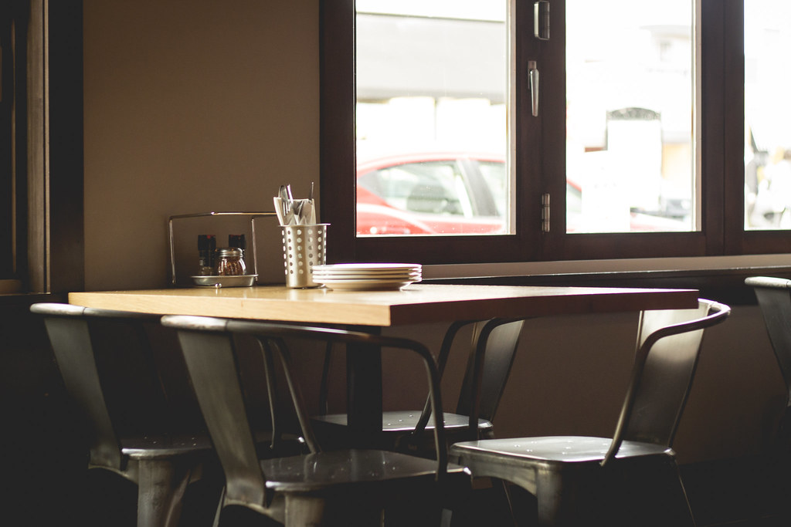
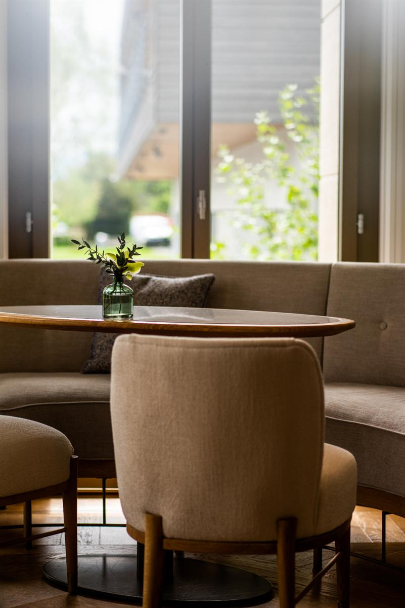

01
地場の恵みを、丁寧に。
新潟県産ブランド肉「阿賀の姫牛」「純白のビアンカ」をはじめ、地場産の野菜をふんだんに使用しています。ステーキやポークグリル、ローストビーフ、ハンバーグなど、素材の旨みをまっすぐに味わえる一皿を、女性シェフが丁寧に仕上げます。
Googleクチコミ 162件・評価4.3 ★★★★☆
新潟市北区東栄町 リトルバード ― 地場の恵みと、自家製パンと、あたたかな時間を。
アクセスを見る ↓Our Story
新潟市北区東栄町、豊栄の住宅街の一角で、リトルバードはこの地とともに25年以上、静かに時を重ねてまいりました。
店内は白を基調とした落ち着いた内装に、ピアノやバイオリンといった楽器がさりげなく飾られた、洒落た雰囲気の空間です。気取らずくつろいでいただけるよう、あたたかみのある白い壁と窓辺の光の中で、ゆっくりとお食事の時間をお過ごしいただけます。
厨房を切り盛りするのは、女性シェフがただ一人。一皿ずつ丁寧に仕上げる料理を、気さくでユーモアのあるマスターが笑顔とともにお届けします。堅苦しさのない、家庭的なあたたかさこそが、リトルバードの変わらぬ持ち味です。気取らない上質さを、どうぞご家族やご友人とゆっくりお楽しみください。

Our Commitment

新潟県産ブランド肉「阿賀の姫牛」「純白のビアンカ」をはじめ、地場産の野菜をふんだんに使用しています。ステーキやポークグリル、ローストビーフ、ハンバーグなど、素材の旨みをまっすぐに味わえる一皿を、女性シェフが丁寧に仕上げます。

しっとりふわふわで、何もつけなくてもそのまま美味しいと評判の自家製パン。コンソメスープや洋食メニューとの相性も抜群で、初めてご来店のお客様からも「パンだけでも食べに来たい」という声をいただいています。

パスタとお肉料理の両方を一度に味わえる、リトルバード一番人気のランチセット「ハーフ&ハーフ」。サラダ・デザート・ドリンクも付き、少しずついろいろな種類を楽しみたい方にぴったりの一皿です。

お料理はもちろん、チーズケーキなどのスイーツも、入口のテイクアウトカウンターでお求めいただけます。体調の優れないご家族への差し入れなど、ちょっとした心遣いのシーンにもご利用いただいています。
Gallery
白を基調とした店内には、ピアノやバイオリンがさりげなく飾られ、住宅街にいることを忘れるような、落ち着いたひとときが流れています。


Voice
Googleクチコミ162件・評価4.3(2026年時点)の中から、いただいたお声の一部をご紹介します。
★★★★★
「ハーフ&ハーフ」を注文しました。ホワイトソースのあさりスパゲティと、柔らかいポークのお料理が出てきて、ハーフとは思えないほどの満足感でした。ポークが柔らかくて美味しかったので、体調の優れない母にもテイクアウトさせていただきました。
― ご来店のお客様より
★★★★★
豊栄の住宅街にあるアットホームな洋食屋さんです。すでにこの地で25年以上営業している老舗洋食店で、店舗前に無料駐車場も多数。店内は白基調の内装にピアノやバイオリンなど楽器が飾られ、洒落た気持ちの良い空間でした。地場産野菜や阿賀の姫牛、純白のビアンカといったブランド肉を、ステーキやソテー、ハンバーグなどで楽しめます。
― ご来店のお客様より
★★★★☆
ランチに「ハーフ&ハーフ」と、おすすめしていただいた牡蠣とアサリのスープスパゲティをいただきました。マスターが気をきかせて取り分け皿を出してくださったのも嬉しかったです。自家製パンはしっとりふわふわで、何もつけなくても美味しい!デザートのチーズケーキもものすごく美味しくて、今度はスイーツだけでも買いに伺いたいくらい満足でした。
― ご来店のお客様より
★★★★★
北区の住宅街にあるお洒落な洋食屋さんです。気さくでユーモアのあるマスターが接客してくださり、シェフは女性お一人ですが、手際よく給仕されてとても満足でした。ジャンボハンバーグはその名の通り400gあって食べ応え充分、満腹になりました。
― ご来店のお客様より
Access
新潟県新潟市北区東栄町、豊栄の住宅街の中にリトルバードはございます。店舗前には無料駐車場を多数ご用意しておりますので、お車でも安心してお越しいただけます。営業時間・定休日など最新の情報は、下記お電話またはInstagramにてお気軽にご確認ください。